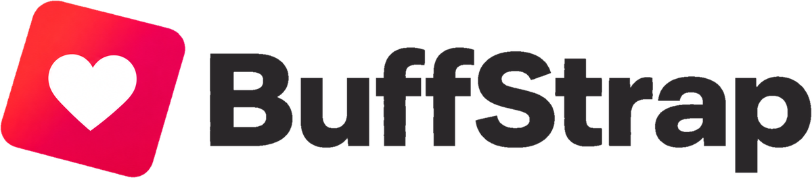

01 THE INTERFACE
Clean User Interface
Powered by WPF UI, BuffStrap brings your settings together in a clean, modern interface. Less digging around, more getting to the fun.


Latest release
BuffStrap is an alternative to the standard Roblox bootstrapper, with more features to make your experience your own.
For 64-bit Windows 10 and above
Or download the installer with PowerShell
iwr https://github.com/bufferclick/BuffStrap/releases/latest/download/BuffStrapSetup.exe -OutFile BuffStrapSetup.exe
Then run BuffStrapSetup.exe to get started.
A few of the things BuffStrap adds on top of the regular Roblox bootstrapper.
Powered by WPF UI, BuffStrap brings your settings together in a clean, modern interface. Less digging around, more getting to the fun.
Make your launcher feel like yours with appearance options and custom bootstrapper themes. You can also use supported mods for local files such as cursors, sounds, and fonts.
Roblox's own settings and FastFlag allowlist still apply.
Get a closer look at your server, including details like region and uptime, when activity tracking is enabled. Location information is provided by RoValra and depends on service availability.
Let your friends see what you're playing with customizable Discord Rich Presence. It also supports BloxstrapRPC for experiences that use it.
Share a game link and bring your friends along, even if they don't use BuffStrap. Invite links use the upstream Fishstrap service.
Save games, group them into folders, and create shortcuts for the ones you love.
Check releases, back up your settings, and repair common installation issues.
Built in the open on the work of Fishstrap and Bloxstrap contributors.
Answers to a few of the most common questions about BuffStrap.
Download BuffStrapSetup.exe from the official GitHub releases page, or use the download button above. Setup will install the latest stable release.
BuffStrap is made for 64-bit Windows 10 and newer. The release executables include the required .NET runtime; Roblox is downloaded or updated when you first launch it.
BuffStrap is open source, so you can inspect the code on GitHub. For your safety, download releases from the official repository and scan any executable you download.
Roblox controls its own rules and enforcement, so no third-party tool can guarantee an account will never be affected. Use features responsibly and review Roblox's guidance on modified clients.
BuffStrap does not promise an FPS boost or lower ping. Performance depends on your device, connection, the experience, and Roblox's current settings.
Roblox controls which client settings are accepted. Its FastFlag allowlist still applies, so some flags may be ignored or change over time.
BuffStrap includes launcher appearance options and supports some local file modifications. Custom bootstrapper themes affect the launch window; they do not universally theme Roblox or every experience. You can browse the upstream Fishstrap mod directory, but check compatibility and download sources carefully.
In the v1.0.1 release, account entries are username labels rather than saved logins. Assigned favorites open the official Roblox game page, where you sign in or switch accounts and press Play. Automatic selected-account launching is not part of that release.
Start with the project guide on GitHub. BuffStrap is based on Fishstrap and Bloxstrap; the Fishstrap Discord is an upstream community, not a dedicated BuffStrap support server.
A little more choice, right where your game starts.